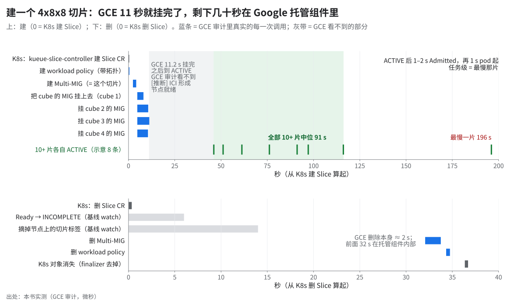
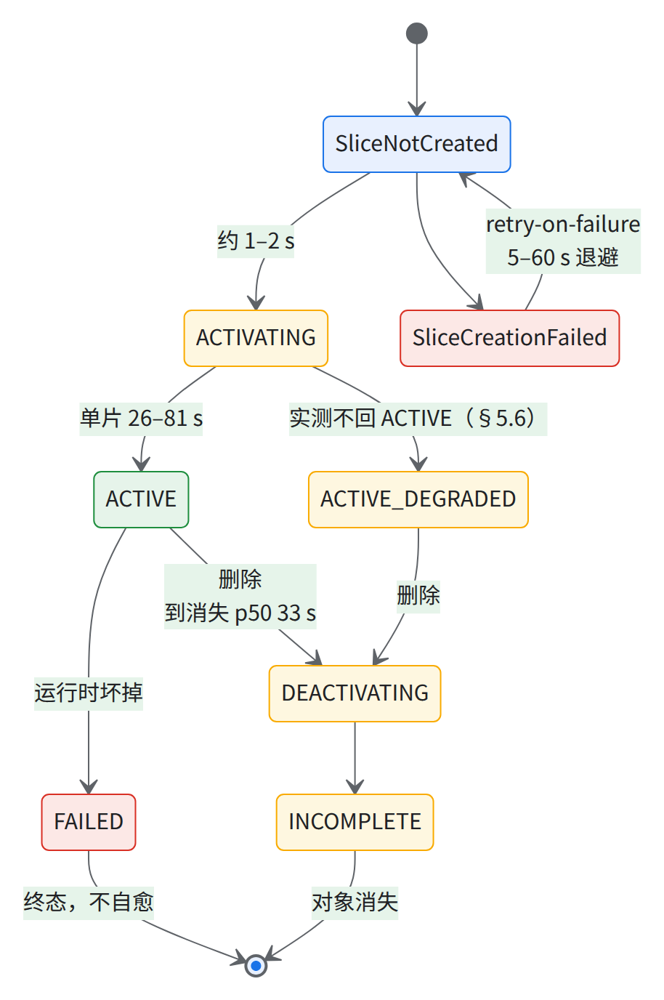
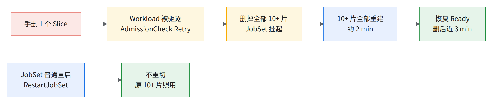
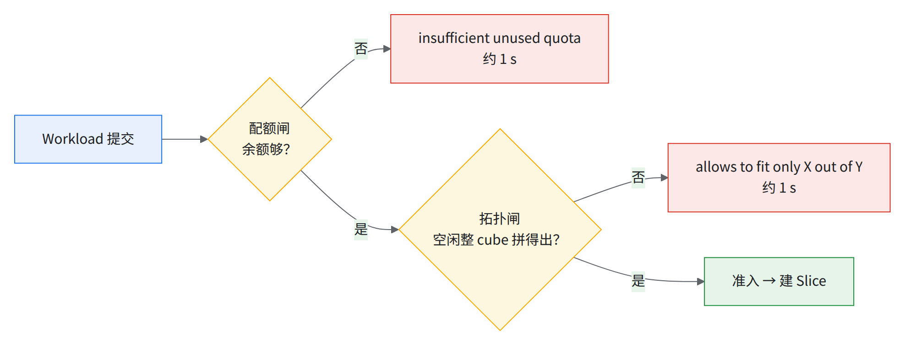
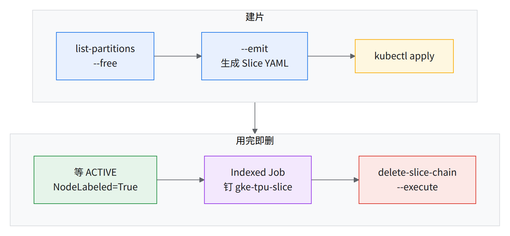
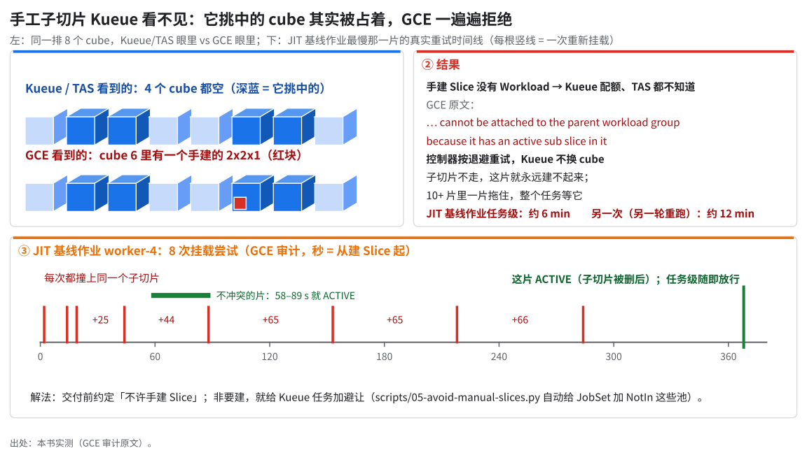
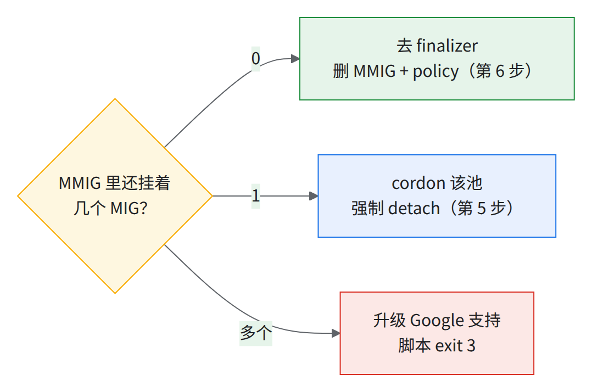
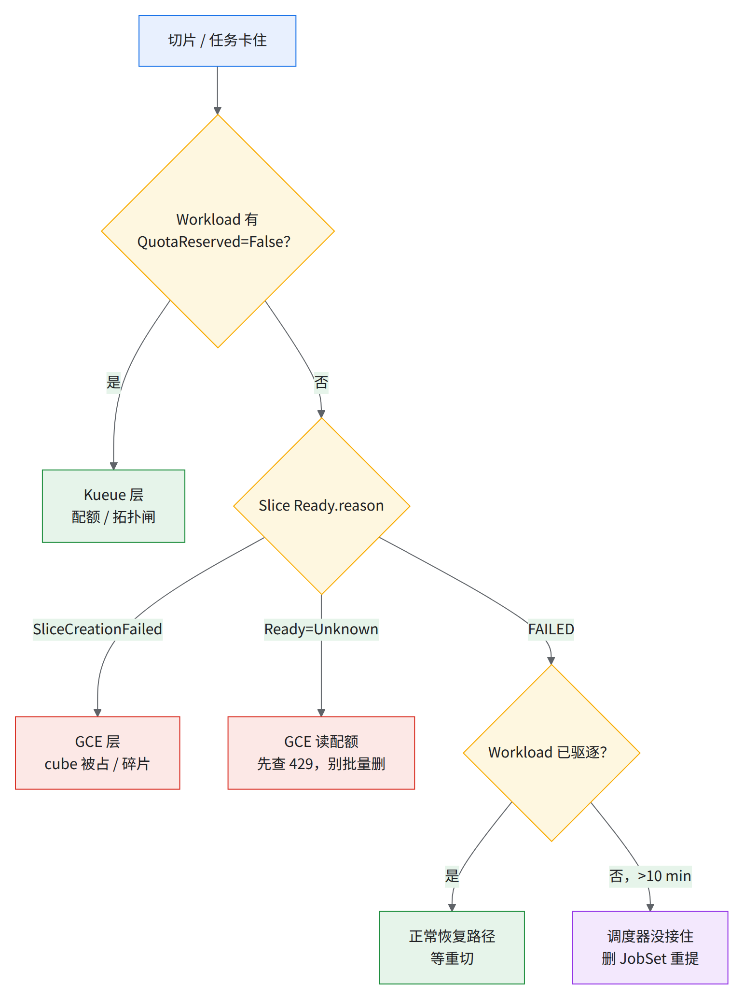

05 动态切片日常操作
- 要解决什么：切片底层做了什么、按什么顺序拆、卡住去哪层找原因。
- 为什么难：切片横跨三层（Kueue、托管 Slice Controller、GCE/OCS），症状和原因常不在一层；删错顺序留下孤儿 MIG，表现成假缺货（§5.5）。
⛔两条红线
- 要保留的集群上，Slice 的 finalizer 默认不要手摘；不要删还被 Slice 占着的节点池（见经验教训第 40 条）。
- finalizer 守「MMIG 里的 cube 全摘干净」；唯一例外是 MMIG 成员已为 0、且已开 Google case 时，按 §5.5 第 5–6 步摘；整集群销毁时由清理流程统一摘除。
- 11 s GCE 挂完 4 个 cube 的 MIG
- 33 s 多 cube 片删除 p50
- 约 3 min 10+ 片任务激活 p50
- 近半失败来自两个方向抢 cube
开工前（每个终端一次）：
source ~/runbook-env.sh && rb_env_check PROJECT REGION ZONE CLUSTER
- 变量：
$PROJECT $REGION $ZONE $CLUSTER $NS $CLUSTER_QUEUE $TPU_FLAVOR $POLICY_NAME $STATE_DIR；可选CLUSTER_HASH（8 位）、SPARE_CUBES。 kubectl（集群管理员）、gcloud（含 alpha/beta）、jq、curl；GCE 要compute.instanceGroupManagers.update、compute.resourcePolicies.delete。- 已过 03 出口（
kubectl get crd slices.accelerator.gke.io有结果）。 - 本章脚本（
scripts/，默认 dry-run / 只读）：
| 脚本 | 节 | 做什么 |
|---|---|---|
05-list-partitions.sh |
5.3 / 5.7 | 按 cube 列状态与占用；--free 只列可用；--emit 出 Slice YAML |
05-slice.yaml |
5.3 | 手动 Slice 模板 |
05-delete-slice-chain.sh |
5.5 | 删 Slice → 等 → 查 MMIG 成员 → 核对；--scan-orphans 找孤儿 |
05-triage-slice.sh |
5.6 | 一次抓全三层现场 |
05-isolate-cube.sh |
5.7 | taint 坏 cube + 按公式重算 Kueue 配额，--undo 反向 |
5.1一个切片在底层做了什么
术语：super-slice · Slice · workload policy · MIG / MMIG · OCS。

读图：GCE 11 s 挂完 4 个 cube、删除 2 s；其余几十秒在 GCE 外（[推断] OCS 接光纤、ICI 形成、打 gke-tpu-slice 标签）。
（17 秒循环，mp4；摘标签 14 s、删 MMIG 32–34 s、对象消失 37 s。）
四类 GCE 调用，量大打满读写配额（见经验教训第 52 条）。一次约 12 小时巡检窗口内的审计条目量级：
| GCE 调用 | 审计条目（量级） | 作用 |
|---|---|---|
resourcePolicies.insert / .delete |
各数百次 | 每 super-slice 建/删 workload policy |
regionMultiMigs.insert / .delete |
各数百次 | 建/删 MMIG（名 = <Slice名>-<集群 hash 前 8 位>） |
instanceGroupManagers.patch |
数千次 | MIG attach / detach MMIG |
instanceGroupManagers.configureAcceleratorTopologies |
上万次 | cube 内 sub-slice ACTIVATE / DEACTIVATE |
configureAcceleratorTopologies= 开关 cube 内那段 ICI [推断：由 PROVISION_ONLY「请求时才配网络」归纳]；GKE 控制器发，运维别手发。- MMIG 命名见上表；成员够了 OCS 自动重接。
| 状态（Ready.reason） | 正常 | 超过即异常 |
|---|---|---|
| SliceNotCreated | 约 1–2 s | — |
| ACTIVATING | 单片安静 26–63 s（本书实测）、各形状 42–81 s（实测集群），与形状几乎无关（1 cube 约 42 s，32 cube 8x16x16 约 1 min 是另一个 8x16x16 作业），阈值以 04 卡 A 为准；2x2x1 约 22 s；任务级 p50：1 片 54 s、3 片 51 s、10+ 片约 3 min（慢的约 7 min、最长约 12 min，多数次有重试） | >10 min（≥32 cube 片 >15 min） |
| ACTIVE | 运行期 | — |
| ACTIVE_DEGRADED | 不是正常运行态：实测一天出现二十多次，没有一次回到 ACTIVE（§5.6） | 出现即告警 |
| DEACTIVATING | 多 cube 片 Deleting Slice 到消失 p50 33 s（p90 38 s，max 46 s）；2x2x1 约 20 s |
>10 min |
| INCOMPLETE | 删除途中或 cube 不够，可停几分钟 | >10 min |
| SliceCreationFailed | 带 slice.gke.io/retry-on-failure: "true" 时自动重试（5–60 s 退避） |
反复出现 |
| FAILED | 终态，不会自愈 | 任何时候 |

FAILED 靠 Kueue 驱逐重切（§5.6）。查一个切片：
SLICE=<切片名> # kubectl get slices.accelerator.gke.io 的 NAME 列（Kueue 建的形如 <ns>-jobset-<JobSet 名>-<hash>-worker-<i>）
kubectl get slice $SLICE -o yaml # 看 spec.partitionIds、status.conditions（Ready 的 reason/message、NodeLabeled）
kubectl get slice $SLICE -o jsonpath='{.status.conditions[?(@.type=="Ready")].reason}' # 脚本里取状态用这条
没有 .status.state（实测恒为空）。过渡态卡住 → 见经验教训第 39 条。冒烟实测：2x2x1 到 10+ × 4x8x8 全在「正常」列（04 形状阶梯总表）。
激活时间：
数据表与出处（27 行）
| 组 | 形状 | 片数 | 激活耗时 | 有重试 |
|---|---|---|---|---|
| 3 片 × 4x4x4 | 4x4x4 | 3 | 57 s | |
| 3 片 × 4x4x4 | 4x4x4 | 3 | 51 s | |
| 3 片 × 4x4x4 | 4x4x4 | 3 | 51 s | |
| 3 片 × 4x4x4 | 4x4x4 | 3 | 56 s | |
| 3 片 × 4x4x4 | 4x4x4 | 3 | 45 s | |
| 3 片 × 4x4x4 | 4x4x4 | 3 | 56 s | 是 |
| 3 片 × 4x4x4 | 4x4x4 | 3 | 52 s | |
| 3 片 × 4x4x4 | 4x4x4 | 3 | 51 s | |
| 3 片 × 4x4x4 | 4x4x4 | 3 | 46 s | |
| 10+ 片 × 4x8x8 | 4x8x8 | 10+ | 约 2 min | |
| 10+ 片 × 4x8x8 | 4x8x8 | 10+ | 约 3 min | 是 |
| 10+ 片 × 4x8x8 | 4x8x8 | 10+ | 约 2 min | 是 |
| 10+ 片 × 4x8x8 | 4x8x8 | 10+ | 约 12 min | 是 |
| 10+ 片 × 4x8x8 | 4x8x8 | 10+ | 约 2 min | |
| 10+ 片 × 4x8x8 | 4x8x8 | 10+ | 约 3 min | 是 |
| 10+ 片 × 4x8x8 | 4x8x8 | 10+ | 约 3 min | 是 |
| 10+ 片 × 4x8x8 | 4x8x8 | 10+ | 约 6 min | 是 |
| 10+ 片 × 4x8x8 | 4x8x8 | 10+ | 约 3 min | 是 |
| 本书脚本 · 安静时 | 4x4x4 | 56 s | ||
| 本书脚本 · 安静时 | 4x4x4 | 26 s | ||
| 本书脚本 · 安静时 | 4x4x8 | 44 s | ||
| 本书脚本 · 安静时 | 4x4x8 | 41 s | ||
| 本书脚本 · 安静时 | 4x8x8 | 63 s | ||
| 本书脚本 · 安静时 | 2×4x4x4 | 52 s | ||
| 本书脚本 · 繁忙时 | 4x4x4 | 163 s | ||
| 本书脚本 · 繁忙时 | 4x4x8 | 172 s | ||
| 本书脚本 · 繁忙时 | 8x8x8 | 161 s |
出处：本书实测（控制器日志 1 s 精度的轮次）；本书实测的时间线表（Slice ACTIVE 列；≈ = Admitted − 1 s）。单独打开 SVG
本书脚本的用例是否「繁忙」按表里「同时在建的切片」一列判：同时有大规模切片在建的算繁忙。
读图：任务级延迟由最慢那片决定，红点是和子切片抢 cube 的。10+ 片任务删完 1 s 就建，首轮 10+ 片全报 already attached / not stable，两分多钟才齐；大任务间留约 1 min [推断]。
本节可能踩到的问题：多 cube 原子大池 · 整 pod 没有单一 ICI 切片
5.2Kueue 路径（生产默认）
00 §2 时序图的操作版（Kueue、TAS、AdmissionCheck、scheduling gate）：
- 提交 JobSet 带
cloud.google.com/gke-tpu-slice-topology注解 → webhook 注入 TAS 注解、健康亲和、gate。 - 建 Slice TAS 选 cube → 每 replica 一个 Slice，名字
{namespace}-jobset-{jobset}-{hash5}-{replicatedJob}-{index}（≤59 字符）。 - 放行 Slice 全 ACTIVE → AdmissionCheck Ready → 去 gate、放 pod。
- 回收 结束 → Kueue 删 Slice；它建的 Slice 别手改。
全有或全无

读图：驱逐 / 挂起触发全量重切，普通重启不碰切片；所以多片大任务必须留空闲健康 cube 当备件。
- 比硬切片省掉「删建节点池 10–15 min」，但 TAS 不能只换坏 cube → 见经验教训第 38 条。
- 事件原文：
Slice has been deleted, evicting workload→AdmissionCheck is Retry, deleting all Slices。 RestartJobSetFailurePolicyAction（JobSet 普通重启）实例：实测集群上一个 10+ 片任务重启 4 次，始终只建过 10+ 片；另一次韧性演练（第 2 次演练）重启两次也没重建切片。
准入两道闸与抢占（实测）：

读图：先配额后拓扑，message 秒级写进 condition；Pending 几十秒没 message 才查别的 [推断]。
- 配额闸实例：其他大任务占着配额时提交出
insufficient unused quota for google.com/tpu in flavor <池数>xtpu7x-128, N more needed；拓扑闸：8x8x16 要 16 cube 只剩 3，allows to fit only 3 out of 16（6 s 后 2/16）；8x16x16 只拼出 28/32 的案例见 04 §4.7。 - 抢占：没写优先级的验收任务准入约 2 min 后被抢（
Evicted→Preempted→Requeued），见 04「验收任务的优先级」。 - 验收任务别高过集群上已有的作业：
06-jobset.sh默认POD_PRIORITY=high。本书 03-kueue-priority.yaml 建的 high 是 800；集群上常已有同名 PriorityClass，先kubectl get priorityclass看值，别撞名。用POD_PRIORITY=并 render 核对，集群上已有其他作业时验收任务用低优先级（06c §6.5）。
kubectl get workloads -A
kubectl describe workload <wl> -n <ns> # <wl> / <ns> = 上一条输出的 NAME / NAMESPACE 列；看 admissionChecks 状态、Evicted 条件与原因
- 驱逐条件写明是运行时 FAILED、创建超时还是手动删除。卡住：
spec.active置 false 再置 true（kubectl patch workload <wl> -n <ns> --type=merge -p '{"spec":{"active":false}}'）；原文写成字符串"false"，快照里是布尔true。 - 切片复用（两个集群都没开）：slice-controller 加
--reuse-slices=true --add-preferred-node-affinity=true；Kueue 开TASRespectNodeAffinityPreferred（v0.18+，高效复用要 ≥0.19.0）。
本节可能踩到的问题：切片激活慢或超时 · 驱逐后重建时旧 pod 未删净，TAS rank 冲突把一片的 pod 撒到多个 cube
5.3手动 Slice 路径（BYO，不经 Kueue）
模板 scripts/05-slice.yaml 节选（字段取自 GA 用户指南与线上对象）：
apiVersion: accelerator.gke.io/v1beta1 # v1alpha1 已弃用
kind: Slice
metadata:
name: my-slice # ≤49 字符，^[a-z]([-a-z0-9]*[a-z0-9])?$
annotations:
slice.gke.io/retry-on-failure: "true"
spec:
type: tpu7x
topology: 8x8x16 # 每维是 4 的倍数且非降序：4x4x8 合法，4x8x4 非法
partitionIds: [<16 个 4x4x4-id>] # 个数 = A×B×C/64
- 不能直接 apply，用第 1 步
--emit生成。取自线上一个用户手建的 Slice；模板注释里的命名与形状规则。

读图：最后一格别忘——手工片不删，Kueue 会选中被占 cube。
1. 找可用 cube（只读）
- partition id = 节点标签
cloud.google.com/gke-tpu-partition-4x4x4-id的值（02 §2.7 第 2 条命令也能列）。 - 可用 = 16/16 Ready、标签 HEALTHY（DEGRADED 不算可用，口径同 09 D01；与 03 §3.5 配额口径一致）、无 Slice CR 引用、无
gke-tpu-slice标签（§5.4）、未隔离（§5.7）。
"$RUNBOOK_DIR"/scripts/05-list-partitions.sh --free # 列：PARTITION_ID NODEPOOL MIG READY STATE TAINT SLICE_CR NODE_SLICE_LABEL
"$RUNBOOK_DIR"/scripts/05-list-partitions.sh --emit my-slice 8x8x16 > "$STATE_DIR/slice-my-slice.yaml" # 取前 16 个可用 cube 填模板
-
实测集群快照离线跑：可用数十个 cube（其余被另一个多片作业或巡检片占）。
-
实测✓：空闲列表与挂
gke-tpu-slice的交集 0；--emit的 8x8x8 片 57 s ACTIVE。sub-cube 手工片 SLICE_CR 列显示-，看 NODE_SLICE_LABEL。 -
partition-4x4x4-state标签：公开文档定义 HEALTHY / DEGRADED / UNHEALTHY（DEGRADED 只在 4x4x4 级，另有 UNSET / INCOMPLETE），webhook 默认注入的 affinity 是 HEALTHY + DEGRADED 源https://docs.cloud.google.com/kubernetes-engine/docs/how-to/use-gke-dynamic-slicing。在实测集群上，GCE 报 DEGRADED(15/15) 的 cube 标的是 UNHEALTHY，没观察到 DEGRADED 值；
05-list-partitions.sh --free遇到 DEGRADED 一律不算可用。
2. 建：
kubectl apply -f "$STATE_DIR/slice-my-slice.yaml"
验证：kubectl get slice my-slice -w 到 ACTIVE（实测 46–81 s）；kubectl get nodes -l cloud.google.com/gke-tpu-slice=my-slice --no-headers | wc -l = 16 × cube 数；kubectl get slice my-slice -o jsonpath='{.status.conditions[?(@.type=="NodeLabeled")].status}' = True。
cube 不存在 / 被占 / 跨 superpod → SliceCreationFailed；topology 与 id 个数不符 → 拒绝 源同上「Note」。
跑负载：单片用 headless Service + 普通 Indexed Job（本书的单片实测就是这样跑的；04 §4.6），nodeSelector 按下表「单片钉切片」另加 gke-tpu-accelerator: tpu7x（即 gke-tpu-slice: <切片名> + gke-tpu-topology: 8x8x8）。
实测集群 default ns 没被挂起是因 manageJobsWithoutQueueName 关着；本书配置（manageJobsWithoutQueueName: true）下放进排除的 $INSPECT_NS（04 §4.1）。
幂等：同名 apply 不新建；换 cube 删掉重建，别原地改 spec.partitionIds。清理："$RUNBOOK_DIR"/scripts/05-delete-slice-chain.sh my-slice --execute（§5.5）。
| 约束 | 说明 |
|---|---|
| 同 superpod | 且同 reservation；每 cube 16 节点全 Ready |
| 不要求物理相邻 [推断] | 校验只有「cubes not in same superpod」，坏 cube 可「OCS can route around it」 |
| 单片钉切片 | nodeSelector cloud.google.com/gke-tpu-slice: <slice名> + cloud.google.com/gke-tpu-topology: <形状> + pod 注解 cloud.google.com/gke-tpu-slice-topology |
| BYO 多片 | JobSet 注解 alpha.jobset.sigs.k8s.io/exclusive-topology: cloud.google.com/gke-tpu-slice，别手写 gke-tpu-slice；Kueue TAS 下禁用 exclusive-topology |
⚠️手工 Slice 对 Kueue 隐形Kueue 不知道 cube 被占，选中后 attach 失败（参考 JIT 基线作业重试 6–7 次）。

读图：红块是一个手建的 2x2x1 巡检片；JIT 基线作业 worker-4 的 multiMig.insert 退避到约 65 s，子切片删后约 6 min 才 ACTIVE。
- 冒烟实测：集群上有少量手工小切片占了若干 cube，本书的 4x8x8 / 8x8x8 / 8x8x16 走 Kueue 三次都撞上、不自愈 → 见经验教训第 33 条。
- 使用规范（写进使用方约定）：① 手工 Slice 只在维护窗口、队列清空时用；② 用完即删；③ 长期留就按 §5.7 taint 并重算配额。
- 绕法：
05-avoid-manual-slices.py注入gke-tpu-slice NotIn [手工片名]亲和（实测 2,048 / 数千芯一次过）。
本节可能踩到的问题：切片模式与形状纪律
5.4防碎片
cube 上有活 sub-slice 就进不了 super-slice（has an active sub slice in it with external slice ID ...），反之亦然 → 见经验教训第 33 条。
两向抢 cube 失败数百次、占近半，全在巡检开始后：2x2x1 被挡得最多，多 cube 片次之。
- 实测期间的全量巡检只用 4–7 个 cube 那么多的主机，但同时最多碰到几十个 cube；另一任务反复重切时一度更多。最重：一个任务的第 2 轮某个 worker 重试十几次，约 12 min 才 Ready。
- TAS 优先把小任务塞进已切碎的 cube（bin-packing）。做法 [推断]：划固定「小任务 cube」（数量写进配额与 09 D04 备件口径），04 §4.1 巡检只在维护窗口跑。
- 判碎片：Pending 且
excluded: nodeSelector: N= 全部节点数 → nodeSelector 不匹配（如遗留 placement-policy selector）；真碎片比「空闲整 cube 数」与「空闲芯片 ÷ 64」。
5.5删除与清理顺序
依赖关系从上到下是：JobSet / Workload 引用 Slice CR（Slice 带 finalizer）；Slice 对应一个 MMIG 和一份同名的 per-slice workload policy；每个 cube 的 MIG 通过字段 multiMig 挂在 MMIG 上；MIG 背后是节点池。删的时候从 JobSet 开始往下删，节点池最后删。
日常删 JobSet 让 Kueue 删 Slice，手动 Slice 直接 kubectl delete slice。回收 cube / 拆集群按下面顺序，第 3–7 步由 scripts/05-delete-slice-chain.sh 串起。
⚠️只回收几个 cube 时别做第 1 步配额置 0 停全集群准入。部分回收先用
05-isolate-cube.sh（§5.7）隔离，再从第 2 步往下。
- 停止准入：CQ
nominalQuota改 0，确认没人改回；先记原值，test保证改的是$TPU_FLAVOR（字段路径）：
kubectl get clusterqueue $CLUSTER_QUEUE -o jsonpath='{.spec.resourceGroups[0].flavors[0].name} {.spec.resourceGroups[0].flavors[0].resources[0].nominalQuota}' \
| tee "$STATE_DIR/cq-quota-before.txt" # 例：tpu7x-flavor-v2 <配额芯片数>
kubectl patch clusterqueue $CLUSTER_QUEUE --type=json -p "[
{\"op\":\"test\",\"path\":\"/spec/resourceGroups/0/flavors/0/name\",\"value\":\"$TPU_FLAVOR\"},
{\"op\":\"replace\",\"path\":\"/spec/resourceGroups/0/flavors/0/resources/0/nominalQuota\",\"value\":\"0\"}]"
- 验证：读回
0，新任务 pending（kubectl get clusterqueue $CLUSTER_QUEUE -o jsonpath='{.status.pendingWorkloads}'）。回滚："0"换回cq-quota-before.txt的数。test失败（flavor 不在 0 号位）→ 照05-isolate-cube.sh按名字找下标。
- 删 JobSet（运行中删切片曾引发固件症状尖峰和丢容量）：
kubectl delete jobset <name> -n $NS。验证：Workload 消失，<ns>-jobset-<name>-*Slice 进 DEACTIVATING。 - 删剩余 Slice，等待：
SLICE=<切片名> # kubectl get slices.accelerator.gke.io 的 NAME 列（Kueue 建的形如 <ns>-jobset-<JobSet 名>-<hash>-worker-<i>）
"$RUNBOOK_DIR"/scripts/05-delete-slice-chain.sh $SLICE # dry-run：打印现状、将执行的命令、推定的 MMIG 名
"$RUNBOOK_DIR"/scripts/05-delete-slice-chain.sh $SLICE --execute # kubectl delete slice，每 30 s 报一次 Ready.reason，最多等 --timeout（默认 900 s）
Kueue 建的 Slice（带 accelerator.gke.io/owner-workload-name 注解）脚本拒删（除非 --allow-kueue），走第 2 步。
- 卡住看 GCE 侧（脚本超时自动做）：
gcloud alpha compute multi-migs describe <slice>-<hash8> --region=$REGION --project=$PROJECT，看各 MIG 的multiMig与status.isStable。- per-slice policy 与 MMIG 同名（如
<slice>-<hash8>）；hash 推不出就export CLUSTER_HASH=<8位>。 - MMIG 成员：
GET compute/alpha/projects/$PROJECT/regions/$REGION/multiMigs/<mmig>/multiMigMembers。
- per-slice policy 与 MMIG 同名（如
- 第 5–6 步只在 Google case 开着时做（脚本强制
--case <号>，不自动 PATCH）。判据：

- 只剩 1 个时：
# $SLICE 同第 3 步；<号> = 开着的 Google case / bug 号（脚本强制要）
"$RUNBOOK_DIR"/scripts/05-delete-slice-chain.sh $SLICE --execute --case <号> --force-detach
# 实际发出：kubectl cordon -l cloud.google.com/gke-nodepool=<池>
# PATCH compute/alpha/projects/$PROJECT/zones/$ZONE/instanceGroupManagers/<mig> {"multiMig": null} ← 只发一次
- PATCH 原文；gcloud 等价
gcloud beta compute instance-groups managed update <mig> --zone=$ZONE --clear-multi-mig。卡住或 412 交 MIG case，别反复重试。回滚：kubectl uncordon -l cloud.google.com/gke-nodepool=<池>（detach 不可逆）。
- MMIG 无成员后才去 finalizer，再删 MMIG 与 workload policy（命令原文）：
"$RUNBOOK_DIR"/scripts/05-delete-slice-chain.sh $SLICE --execute --case <号> --remove-finalizer # $SLICE、<号> 同第 5 步
# 实际发出（重新读一遍状态、确认 0 个 MIG 挂着之后）：
# kubectl patch slice <slice> --type merge -p '{"metadata":{"finalizers":[]}}'
# gcloud alpha compute multi-migs delete <slice>-<hash8> --region=$REGION --project=$PROJECT
# gcloud compute resource-policies delete <slice>-<hash8> --region=$REGION --project=$PROJECT
gcloud alpha compute multi-migs只对白名单项目可用，报权限错就把$STATE_DIR/05-delete-slice-chain-*.log交 case 让 Google 删。- 删的是 per-slice policy，不是 02 §2.3 的 cube 级
$POLICY_NAME（第 9 步）。
- 核对（脚本自动，不干净 exit 1）：各 MIG
multiMig空、isStable: true，节点cloud.google.com/gke-tpu-slice标签消失，MMIG 与 per-slice policy 均 404。- 全集群巡检孤儿（每 MIG 一次 GET，费读配额经验教训第 52 条）：
"$RUNBOOK_DIR"/scripts/05-delete-slice-chain.sh --scan-orphans。三类：DANGLING(MMIG 404)（需要 Google 支持处理）、ORPHAN（MMIG 在、无 Slice CR）、ORPHAN-WP（policy 无 Slice CR，可直接resource-policies delete）。
- 全集群巡检孤儿（每 MIG 一次 GET，费读配额经验教训第 52 条）：
- 最后删/缩节点池，停在 size 0 就再删一次，确认 MIG 没了：
POOL=<池名> # 05-list-partitions.sh 的 NODEPOOL 列，或 gcloud container node-pools list --cluster=$CLUSTER --location=$ZONE --project=$PROJECT
gcloud container node-pools delete $POOL --cluster=$CLUSTER --location=$ZONE --project=$PROJECT --quiet
gcloud compute instance-groups managed list --project=$PROJECT --zones=$ZONE --filter="name~$POOL" # 期望空
- 拆集群：删全部 Slice → 删集群 → 删
$POLICY_NAME（02 §2.3）→ 拆 VPC。Kueue 对象先删，否则卡在自己的 finalizer（经验教训第 40 条）：
for k in clusterqueue resourceflavor admissioncheck topology; do
kubectl delete $k --all --ignore-not-found --timeout=90s
done
- Slice 删完才能关切片控制器 → 删 CRD → 删标签；zonal 集群用
--location=$ZONE（GA 指南--location=${REGION}是 regional 写法）。
kubectl get slices.accelerator.gke.io --no-headers | wc -l # 必须是 0；不是 0 回到第 3 步
gcloud container clusters update $CLUSTER --location=$ZONE --project=$PROJECT --no-enable-slice-controller
kubectl delete crd slices.accelerator.gke.io
gcloud container clusters delete $CLUSTER --location=$ZONE --project=$PROJECT --quiet
gcloud compute resource-policies delete $POLICY_NAME --region=$REGION --project=$PROJECT --quiet # cube 级 policy，集群删完才能删
"$RUNBOOK_DIR"/scripts/02-create-networks.sh --delete # 拆 VPC（02 的脚本）
验证（不可回滚）：gcloud compute resource-policies list --project=$PROJECT --regions=$REGION --filter="name~^$CLUSTER" 为空；gcloud compute instance-groups managed list --project=$PROJECT --filter="name~gke-$CLUSTER" 为空。
⛔违反顺序的后果→ 见经验教训第 40 条
...multi-MIG operating in raw capacity mode删池失败；或池记录删了、MIG 仍挂在 sub-block 上，表现为假 GCE_STOCKOUT；DANGLING 只能服务端清。
本节可能踩到的问题：reservation 到期被删，GKE 跟着删掉全部 TPU 节点 · 两个 Slice 抢同一个 partition · 泄漏与孤儿对象静默吃容量 · NAP / Cluster Autoscaler / ProvisioningRequest 在 All Capacity 整 pod 上的坑 · 删除卡住
5.6故障切片分诊
先抓现场（只读，存 $STATE_DIR/triage-<slice>-<时间>.txt，升级时整份附上）：
SLICE=<切片名> # kubectl get slices.accelerator.gke.io 的 NAME 列（Kueue 建的形如 <ns>-jobset-<JobSet 名>-<hash>-worker-<i>）
"$RUNBOOK_DIR"/scripts/05-triage-slice.sh $SLICE --since 2h # --since 要盖住切片创建时间，见下
--since：第 7–9 段（Cloud Logging）只查此窗口；挡路的那个手工 Slice 建于 128 min 前，--since 1h三段全空。- 第 4 段按形状选 partition 层级（2x2x1/2x2x2/2x2x4/2x4x4 用同名层级）。手工片第 6 段只有
Slice is missing workload owner annotations, skipping event handling。
它依次做的：
# $SLICE 同上一个代码块
kubectl describe slice $SLICE # Ready.reason/message、finalizers、deletionTimestamp
kubectl get events -A --field-selector involvedObject.name=$SLICE --sort-by=.lastTimestamp
kubectl describe workload -n $(kubectl get slice $SLICE -o jsonpath='{.metadata.annotations.accelerator\.gke\.io/owner-workload-namespace}') \
$(kubectl get slice $SLICE -o jsonpath='{.metadata.annotations.accelerator\.gke\.io/owner-workload-name}') # Kueue 建的 Slice 才有这两个注解（同 05-triage-slice.sh）
kubectl logs deployment/slice-controller-controller-manager -n slice-controller-system -c manager --since=2h | grep $SLICE # kueue-slice-controller
gcloud logging read 'logName="projects/'$PROJECT'/logs/slice-controller" AND textPayload=~"'$SLICE'"' --project=$PROJECT --freshness=2h # GKE 托管 Slice Controller
gcloud logging read 'protoPayload.resourceName:"accelerator.gke.io/v1beta1/slices/'$SLICE'"' --project=$PROJECT --freshness=2h # 谁建/删了它
「slice controller」有三个：GKE 托管的在控制面（下表多数 GCE 报错出自它）；kueue-slice-controller 在 slice-controller-system；第三个本方案不装。托管那份的日志使用方能否查到 [需验证]，查不到交脚本输出。术语见 00 术语表。

| 现象 | 含义 | 动作 |
|---|---|---|
Slice FAILED，Workload 已 Evicted 在重排 |
正常恢复 | 等重切；确认有空闲健康 cube |
Slice FAILED 超过 10 min 且 Workload 没被驱逐 |
调度器没接住（不自愈） | 删 JobSet 重提或 toggle spec.active；kueue-slice-controller（别名 kueue-tpu-ac，见术语表）新版本起 20 min 周期 reconcile，版本看 03 §3.3 的镜像查询 → 见经验教训第 39 条 |
SliceCreationFailed: step AttachMIGsToMMIG failed ... already attached to '...' |
cube 还被别的片占着 | 通常自愈（实测集群一次 10+ 片运行里每片都报过这条，最后仍全部激活）；持续则重叠审计 → 见经验教训第 39 条。实测上百次集中在同一段约 20 分钟内 |
SliceCreationFailed ... active sub slice in it with external slice ID <名>-<hash8>，<名> 不是 default-jobset-...（全文见注 1） |
TAS 选中手工 Slice 占的 cube；不自愈（retry-attempt 到 11 仍失败） | 删 JobSet 过 05-avoid-manual-slices.py 重提；找主人删片或 taint → 见经验教训第 33 条 |
Workload QuotaReserved=False：insufficient unused quota ... N more needed / topology "..." allows to fit only X out of Y slice(s) |
没到切片层：配额不够 / 整 cube 拼不出 | 等或调配额（03 §3.5）/ 换形状（§5.2） |
Workload Evicted + Preempted to accommodate a workload ... due to prioritization in the ClusterQueue → Requeued |
被更高优先级抢占 | 不是故障；见 04 |
FormSubsliceStep failed ... has an active sub slice / ConfigureAcceleratorTopology action is not supported for Managed Instance Groups attached to a Multi-MIG |
碎片：前者大片被 2x2x1 挡，后者反之 | 删该 cube 上的 sub-slice（5.4）。实测数百次，各类失败里最多 |
Error 412: ... multi-MIG on a managed instance group that is not stable / 400 resourceNotReady |
与 GCE 后台操作竞争，或两片抢同一 partition | 等 2–5 min；重叠审计。实测 not stable 上百次、not ready 几十次 |
Ready=Unknown / "Unexpected partition state" / MMIGHealthProbeFailed |
GCE 读配额打满，不是硬件 | 查 429；别批量删（实测事故中批量删除反把 detach 卡死，五个高优作业停约 6–12 h） → 见经验教训第 52 条 |
Slice ACTIVE_DEGRADED（从 ACTIVATING 直接进来） |
一种独立状态，不是 OCS 引起的 cube DEGRADED。实测一天出现二十多次，没有一次回到 ACTIVE：除 1 次转 FAILED 外都转 DEACTIVATING，碰上它的训练任务随后失败或被人工重建 | 别让任务在上面等：出现即告警（08 告警 #4），删 JobSet 重提换片；向 Google 要状态定义 → 见经验教训第 37 条 |
| ACTIVATING 卡住且带 deletionTimestamp | 老控制器 bug | 由 Google 指导改 status 为 INCOMPLETE，别自己改 |
len(partitionIds) 不足（如 31/32）、两 pod 挤一个节点 |
TAS 缓存损坏（常因重建 Topology） | CQ stopPolicy: HoldAndDrain → 重启 Kueue → 改回 None（驱逐该 CQ 全部运行任务） → 见经验教训第 32 条 |
替换节点缺 gke-tpu-slice/gke-tpu-topology 标签但 Slice 仍 NodeLabeled=True |
标签漂移 | 向 Google 要 force-relabel 注解的 key → 见经验教训第 50 条 |
注 1：完整报错 SliceCreationFailed: step AttachMIGsToMMIG failed ... INVALID_FIELD_VALUE ... cannot be attached to the parent workload group because it has an active sub slice in it with external slice ID <名>-<hash8>。
HoldAndDrain（原始步骤，形式为推断；spec.stopPolicy 路径与 None 已对快照 CQ 核对）：
kubectl patch clusterqueue $CLUSTER_QUEUE --type=merge -p '{"spec":{"stopPolicy":"HoldAndDrain"}}' # 取值以 Google 给的为准
kubectl rollout restart deployment -n kueue-system kueue-controller-manager
kubectl patch clusterqueue $CLUSTER_QUEUE --type=merge -p '{"spec":{"stopPolicy":"None"}}' # 快照 CQ 即 stopPolicy: None
- 验证：第 1 条后
kubectl get clusterqueue $CLUSTER_QUEUE -o jsonpath='{.status.admittedWorkloads}'到 0 再重启，kubectl rollout status deployment -n kueue-system kueue-controller-manager完成；第 3 条后读回None、status.conditions[?(@.type=="Active")].status=True。回滚即第 3 条。
升级给谁、带什么：08 §8.5。
本节可能踩到的问题：multi-MIG 配额（MMIG）配额不够，super-slice 建不出来 · 「缺货」多半不是缺货 · 电力事件与 protection tier 错配 · 删除卡住 · START_SESSION failed / barrier
5.7隔离坏 cube
原样：
# <id1>,<id2> = 要隔离的 cube 的 partition id：05-list-partitions.sh 第 1 列（或 kubectl get nodes -L cloud.google.com/gke-tpu-partition-4x4x4-id）
kubectl taint nodes -l 'cloud.google.com/gke-tpu-partition-4x4x4-id in (<id1>,<id2>)' PartOfBrokenSlice=true:NoSchedule
- Google 确认清理后才去 taint。配额按 03 §3.5 的公式重算，不是固定扣 64×cube 数：健康 − S 还 ≥ 128 时配额封顶 8,192，隔离不改变它 [推断]。使用方自动化别删/重建「不健康」节点，整 pod 的维修是原地的。
脚本一次做 taint + 重算配额 + 台账（默认 dry-run）：
# <号> = 报修的 bug 号，<现象> = 一句话描述（进台账）；<id1> <id2> = 05-list-partitions.sh 第 1 列
"$RUNBOOK_DIR"/scripts/05-isolate-cube.sh --reason "<case 号> <现象>" <id1> <id2> # 看将执行什么
"$RUNBOOK_DIR"/scripts/05-isolate-cube.sh --reason "<case 号> <现象>" --execute <id1> <id2>
# 实际发出：kubectl taint nodes -l '...-4x4x4-id in (<id1>,<id2>)' PartOfBrokenSlice=true:NoSchedule --overwrite
# kubectl patch clusterqueue $CLUSTER_QUEUE --type=json -p '[{"op":"test",...flavor 名...},{"op":"test",...旧值...},
# {"op":"replace",".../nominalQuota","value":"<重算值>"}]'
# 重算值 = 03-addons.sh quota --assume-isolated=<id1>,<id2> 的建议值（--undo 用 --assume-restored）；与现值相同就不 patch
字段与字符串取值（nominalQuota: "<芯片数>"）按实测集群快照；按 $TPU_FLAVOR 找下标，两个 test 防并发写错。快照 dry-run（按每 cube 固定扣 64 颗的写法）：2 个 cube 配额减 128 颗芯片。
- 配额按重算给，不是照扣：调
03-addons.sh quota，公式只在那一处（DEGRADED 不算健康，封顶照算）；脚本要求SPARE_CUBES已填。这套逻辑未实测，验证见脚本头注释。 - 验证：
kubectl get nodes -l '...-4x4x4-id in (<ids>)' -o json | jq '[.items[]|select(.spec.taints[]?.key=="PartOfBrokenSlice")]|length'= 16 × cube 数；nominalQuota= 脚本打印的「重算」值（未封顶时少 64 × cube 数，封顶时不变）；TAINT 列TAINTED；--list看台账$STATE_DIR/isolated-cubes.tsv。
📊实测（在线集群）✓，只做了 dry-run，集群没被改动对一个 cube（16 个节点、64 颗芯片）做 server 端配额 dry-run，配额减 64 颗芯片（按每 cube 固定扣 64 颗的写法），路径与活对象一致；改成重算后还没在真集群上 dry-run [需验证]。换集群先核对
TPU_FLAVOR与 RF 名（本书tpu7x-flavor-v2，实测集群<池数>xtpu7x-128），不一致时脚本报错退出。
| 项 | 说明 |
|---|---|
| 幂等 | 台账已有的 id 不重复处理；配额每次重算绝对值；taint 带 --overwrite |
| 中途失败 | 先打 taint、后改配额。如果改配额那步失败（如 03-addons.sh quota 报错），就会停在半完成状态：cube 已经打了 taint，但配额没改，台账也没写。修好原因后原样重跑同一条命令即可补齐（taint 幂等）。在这段时间里，Kueue 仍按旧配额放行任务，未封顶时可放行的芯片比实际能用的多出 64 × cube 数，多放进来的任务会因为污点卡在 Pending [推断，未实测] |
| 回滚（Google 修好后） | 05-isolate-cube.sh --undo --execute <ids>：去 taint、按 quota 公式重算配额、删台账行 |
| 在跑的 pod | NoSchedule 不赶，靠 Slice FAILED → 驱逐（§5.6）或 waitForPodsReady.recoveryTimeout（07 §7.2） |
| 前提 | TAS 选 cube 避开 pod 不容忍的 taint [需验证：使用方集群隔离后 dry-run 提交一次，确认没选中被隔离 cube] |
| 配额口径 | nominalQuota = min(128, 健康 cube − $SPARE_CUBES) × 64，健康只算 HEALTHY；脚本直接调 03-addons.sh quota 算（03 §3.5） |
本节可能踩到的问题：MMIG 孤儿与卡死 · 主机维护不按 cube
检查点
做完了（本章出口）
- 能用
kubectl get slice <name> -o yaml读 Ready.reason，按 §5.1 状态表判超时。 - 测试切片按 §5.5 演练过回收，无残留 Slice / 孤儿 MMIG。
- §5.7 隔离已在测试 cube 上 dry-run，写明去 taint 前提。
-
--scan-orphans跑过，没有DANGLING/ORPHAN行。 - 真实报错能在 §5.6 分诊表对上层。
- 手工 Slice（无 owner-workload-name 注解）已清点，各有主人和删除时间，或 cube 已 taint（见经验教训第 33 条）。
- 小任务 cube 集合与巡检窗口已约定（§5.4）。
说得出（先自己答，再点开对答案）
为什么默认不要自己去掉 Slice 的 finalizer？
cube 没摘干净就去掉会留孤儿 MMIG，表现成假缺货，只能 Google 服务端清；唯一例外是 MMIG 成员已为 0、且已开 Google case 时，按 §5.5 的步骤摘手删 10+ 片任务里的 1 个 Slice 会怎样？
整个 Workload 被驱逐，10+ 片全重建，约 2 min 恢复一个 cube 上还有 2x2x1 巡检切片，能把它编进 4x8x8 吗？
不能，GCE 报has an active sub slice，先删 sub-slice一批 Slice 同时
Ready=Unknown，该批量删吗？不该；多半是 GCE 读配额被打满，先查 429回收的删除方向？
从负载往下：JobSet → Slice → MMIG → MIG/节点池，池最后删
交棒：下一步先定要几片、JobSet 怎么声明 → 06，再把数据和缓存备好 → 06a，然后用 10+ 个 4x8x8 切片跑数千芯片的真实训练 → 06b（公开配置）/ 06c（大号 MoE 模型 JIT 对照）。